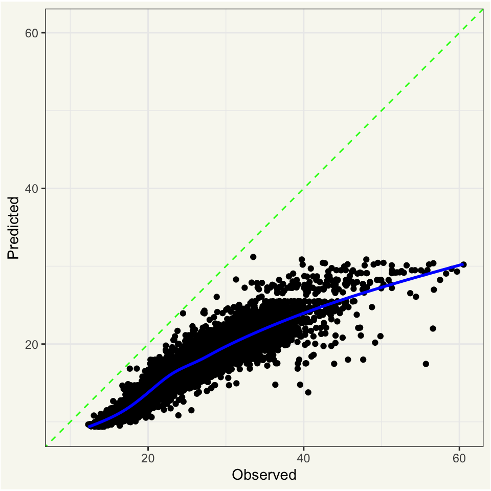

This is a cross-post of a post of mine on the tidyverse blog.
We’re bristling with elation to share about a set of upcoming features for postprocessing with tidymodels. Postprocessors refine predictions outputted from machine learning models to improve predictive performance or better satisfy distributional limitations. The developmental versions of many tidymodels core packages include changes to support postprocessors, and we’re ready to share about our work and hear the community’s thoughts on our progress so far.
Postprocessing support with tidymodels hasn’t yet made it to CRAN, but you can install the needed versions of tidymodels packages with the following code.
Now, we load packages with those developmental versions installed.
Existing tidymodels users might have spotted something funky already; who is this tailor character?
Meet tailor👋
The tailor package introduces tailor objects, which compose iterative adjustments to model predictions. tailor is to postprocessing as recipes is to preprocessing; applying your mental model of recipes to tailor should get you a good bit of the way there.
| Tool | Applied to... | Initialize with... | Composes... | Train with... | Predict with... |
|---|---|---|---|---|---|
| recipes | Training data | recipe() |
step_*()s |
prep() |
bake() |
| tailor | Model predictions | tailor() |
adjust_*()ments |
fit() |
predict() |
First, users can initialize a tailor object with tailor().
tailor()
##
## ── tailor ──────────────────────────────────────────────────────────────────────
## A postprocessor with 0 adjustments.Tailors compose “adjustments,†analogous to steps from the recipes package.
tailor() %>%
adjust_probability_threshold(threshold = .7)
##
## ── tailor ──────────────────────────────────────────────────────────────────────
## A binary postprocessor with 1 adjustment:
##
## • Adjust probability threshold to 0.7.As an example, we’ll apply this tailor to the two_class_example data made available after loading tidymodels.
head(two_class_example)
## truth Class1 Class2 predicted
## 1 Class2 0.003589243 0.9964107574 Class2
## 2 Class1 0.678621054 0.3213789460 Class1
## 3 Class2 0.110893522 0.8891064779 Class2
## 4 Class1 0.735161703 0.2648382969 Class1
## 5 Class2 0.016239960 0.9837600397 Class2
## 6 Class1 0.999275071 0.0007249286 Class1This data gives the true value of an outcome variable truth as well as predicted probabilities (Class1 and Class2). The hard class predictions, in predicted, are "Class1" if the probability assigned to "Class1" is above .5, and "Class2" otherwise.
The model predicts "Class1" more often than it does "Class2".
two_class_example %>% count(predicted)
## predicted n
## 1 Class1 277
## 2 Class2 223If we wanted the model to predict "Class2" more often, we could increase the probability threshold assigned to "Class1" above which the hard class prediction will be "Class1". In the tailor package, this adjustment is implemented in adjust_probability_threshold(), which can be situated in a tailor object.
tlr <-
tailor() %>%
adjust_probability_threshold(threshold = .7)
tlr
##
## ── tailor ──────────────────────────────────────────────────────────────────────
## A binary postprocessor with 1 adjustment:
##
## • Adjust probability threshold to 0.7.tailors must be fitted before they can predict on new data. For adjustments like adjust_probability_threshold(), there’s no training that actually happens at the fit() step besides recording the name and type of relevant variables. For other adjustments, like numeric calibration with adjust_numeric_calibration(), parameters are actually estimated at the fit() stage and separate data should be used to train the postprocessor and evaluate its performance. More on this in Tailors in context.
In this case, though, we can fit() on the whole dataset. The resulting object is still a tailor, but is now flagged as trained.
tlr_trained <- fit(
tlr,
two_class_example,
outcome = truth,
estimate = predicted,
probabilities = c(Class1, Class2)
)
tlr_trained
##
## ── tailor ──────────────────────────────────────────────────────────────────────
## A binary postprocessor with 1 adjustment:
##
## • Adjust probability threshold to 0.7. [trained]When used with a model workflow via add_tailor(), the arguments to fit() a tailor will be set automatically. Generally, as in recipes, we recommend that users add tailors to model workflows for training and prediction rather than using them standalone for greater ease of use and to prevent data leakage, but tailors are totally functional by themselves, too.
Now, when passed new data, the trained tailor will determine the outputted class based on whether the probability assigned to the level "Class1" is above .7, resulting in more predictions of "Class2" than before.
Changing the probability threshold is one of many possible adjustments available in tailor.
- For probabilities: calibration
- For transformation of probabilities to hard class predictions: thresholds, equivocal zones
- For numeric outcomes: calibration, range
Support for tailors is now plumbed through workflows (via add_tailor()) and tune, and rsample includes a set of infrastructural changes to prevent data leakage behind the scenes. That said, we haven’t yet implemented support for tuning parameters in tailors, but we plan to implement that before this functionality heads to CRAN.
Tailors in context
As an example, let’s model a study of food delivery times in minutes (i.e., the time from the initial order to receiving the food) for a single restaurant. The deliveries data is available upon loading the tidymodels meta-package.
data(deliveries)
# split into training and testing sets
set.seed(1)
delivery_split <- initial_split(deliveries)
delivery_train <- training(delivery_split)
delivery_test <- testing(delivery_split)
# resample the training set using 10-fold cross-validation
set.seed(1)
delivery_folds <- vfold_cv(delivery_train)
# print out the training set
delivery_train
## # A tibble: 7,509 × 31
## time_to_delivery hour day distance item_01 item_02 item_03 item_04 item_05
## <dbl> <dbl> <fct> <dbl> <int> <int> <int> <int> <int>
## 1 21.2 16.1 Tue 3.02 0 0 0 0 0
## 2 17.9 12.4 Sun 3.37 0 0 0 0 0
## 3 22.4 14.2 Fri 2.59 0 0 0 0 0
## 4 30.9 19.1 Sat 2.77 0 0 0 0 0
## 5 30.1 16.5 Fri 2.05 0 0 0 1 0
## 6 35.3 14.7 Sat 4.57 0 0 2 1 1
## 7 13.1 11.5 Sat 2.09 0 0 0 0 0
## 8 18.3 13.4 Tue 2.35 0 2 1 0 0
## 9 25.2 20.5 Sat 2.43 0 0 0 1 0
## 10 30.7 16.7 Fri 2.24 0 0 0 1 0
## # ℹ 7,499 more rows
## # ℹ 22 more variables: item_06 <int>, item_07 <int>, item_08 <int>,
## # item_09 <int>, item_10 <int>, item_11 <int>, item_12 <int>, item_13 <int>,
## # item_14 <int>, item_15 <int>, item_16 <int>, item_17 <int>, item_18 <int>,
## # item_19 <int>, item_20 <int>, item_21 <int>, item_22 <int>, item_23 <int>,
## # item_24 <int>, item_25 <int>, item_26 <int>, item_27 <int>Let’s deliberately define a regression model that has poor predicted values: a boosted tree with only three ensemble members.
Evaluating against resamples:
set.seed(1)
delivery_res <-
fit_resamples(
delivery_wflow,
delivery_folds,
control = control_resamples(save_pred = TRUE)
)The \(R^2\) looks quite strong!
collect_metrics(delivery_res)
## # A tibble: 2 × 6
## .metric .estimator mean n std_err .config
## <chr> <chr> <dbl> <int> <dbl> <chr>
## 1 rmse standard 9.52 10 0.0533 Preprocessor1_Model1
## 2 rsq standard 0.853 10 0.00357 Preprocessor1_Model1Let’s take a closer look at the predictions, though. How well are they calibrated? We can use the cal_plot_regression() helper from the probably package to put together a quick diagnostic plot.
collect_predictions(delivery_res) %>%
cal_plot_regression(truth = time_to_delivery, estimate = .pred)
Ooof.
In comes tailor! Numeric calibration can help address the correlated errors here. We can add a tailor to our existing workflow to “bump up†predictions towards their true value.
delivery_wflow_improved <-
delivery_wflow %>%
add_tailor(tailor() %>% adjust_numeric_calibration())The resampling code looks the same from here.
set.seed(1)
delivery_res_improved <-
fit_resamples(
delivery_wflow_improved,
delivery_folds,
control = control_resamples(save_pred = TRUE)
)Checking out the same plot reveals a much better fit!
collect_predictions(delivery_res_improved) %>%
cal_plot_regression(truth = time_to_delivery, estimate = .pred)There’s actually some tricky data leakage prevention happening under the hood here. When you add tailors to workflow and fit them with tune, this is all taken care of for you. If you’re interested in using tailors outside of that context, check out this documentation section in add_tailor().
What’s to come
We’re excited about how this work is shaping up and would love to hear yall’s thoughts on what we’ve brought together so far. Please do comment on our social media posts about this blog entry or leave issues on the tailor GitHub repository and let us know what you think!
Before these changes head out to CRAN, we’ll also be implementing tuning functionality for postprocessors. You’ll be able to tag arguments like adjust_probability_threshold(threshold) or adjust_probability_calibration(method) with tune() to optimize across several values. Besides that, post-processing with tidymodels should “just work†on the developmental versions of our packages—let us know if you come across anything wonky.
Acknowledgements
Postprocessing support has been a longstanding feature request across many of our repositories; we’re grateful for the community discussions there for shaping this work. Additionally, we thank Ryan Tibshirani and Daniel McDonald for fruitful discussions on how we might scope these features.